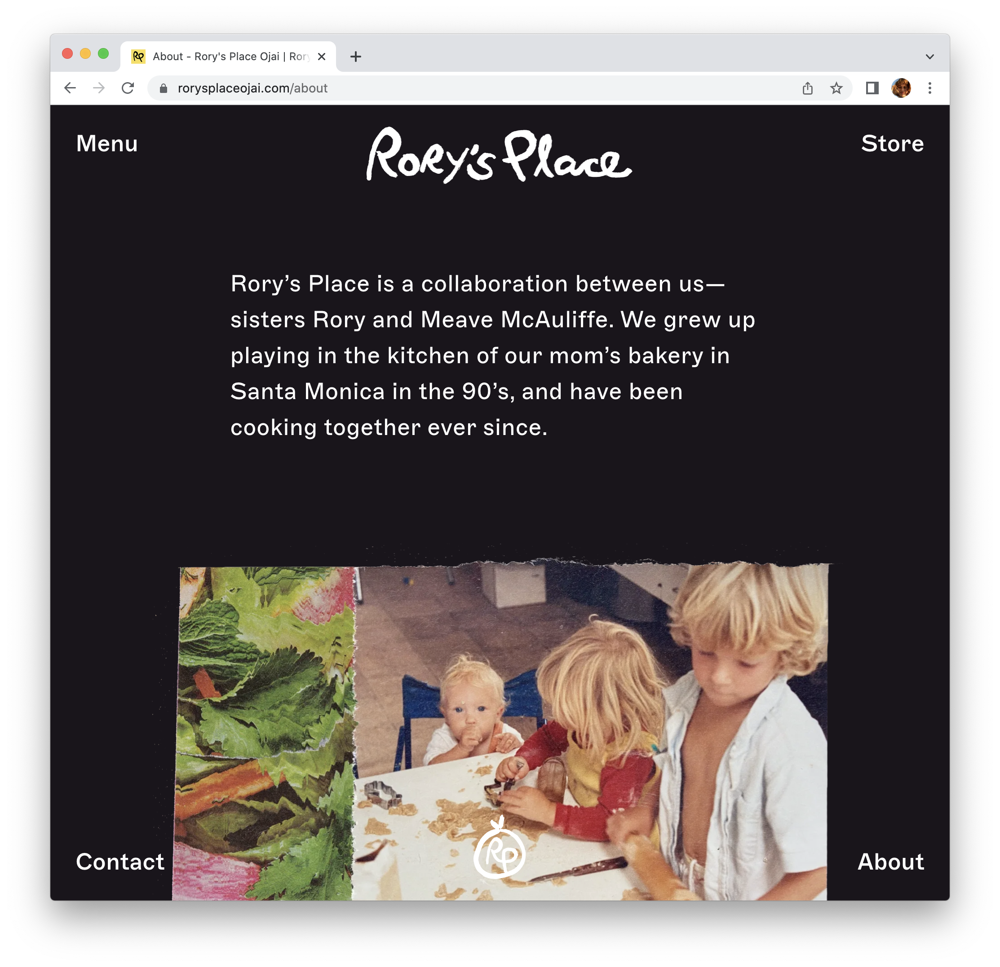

Final project proposal
Introduction
Sundog Coffee Roasters
Sundog Coffee Roasters is located in Santa Barbara, California. It was created in order to create a lively environment to create, and enjoy coffee and other artisanal beverages.
Target audience
People using this site include those who love coffee, those who are curious about the name, those who enjoy prints and are curious about expanding their design capabilities.
The primary goals of this coffee spot is to encourage those to enjoy coffee and grow.
Comparative analysis
Rory's Place Ojai
Verve Coffee Roaster's
Singing Sun Coffee


Website content
Home
Welcome to Sundog! We're glad you're here. We are here to bring together two things we love — books and coffee.
[Coffee bar pictured with plants, books, and sunlight]
About
Sundog Coffee Roasters is located in Santa Barbara, California. It was created in order to create a lively environment to create, and enjoy coffee and other artisanal beverages, as well as books!
[Coffee pour into a mug]
Menu
Coffee!
Cold Brew
4.00
Cappuccino
3.50 + additional charge for non-dairy milks
Latte
House Made Syrups
4.00 + additional charge for non-dairy milks
Pour over
Ethiopian Blend and House Blend
4.00
Espresso
3.25
Cortado
3.50
Not Coffee!
Matcha
4.50
Hibiscus Tea
3.00
Chamomile latte
4.50
Sandos
Sandwich of the day
Ask and you will find out.
10.00
Bacon Lettuce Avocado Tomato
6.00
Portabella Surprise
Portabella mushroom on foccaccia bread with fresh pesto, garlic aioli, sprouts, and beets.
Bowls
Peanut Butter Daydream
Peanut butter, Granola, Acai, Bananas, Strawberries, and Blueberries.
11.50
Berries n Cream
Blackberries, Raspberries, Blueberries, Granola, Honey, Greek Yogurt, and a drizzle of sweet cream.
7.50
Pastries
Fresh Daily!
4.00
[Pastry on plate]
Books
This month's favorites
- 10,000 Hours: You Become What you Practice
- The Brief and Wondrous Life of Oscar Wao by Junot Diaz
- Family Furnishings: Selected Stories 1995-2014 by Alice Munro
- This Side of Brightness by Colum McCann
[Book A]
[Book B]
[Book C]
Shop
Shirt
[T-shirt]
10.00
Hat
[Hat]
6.00
[Art Print]
15.00
Planner
[Planner]
12.00
Location
Santa Barbara, California
[Map of coffee shop location.]